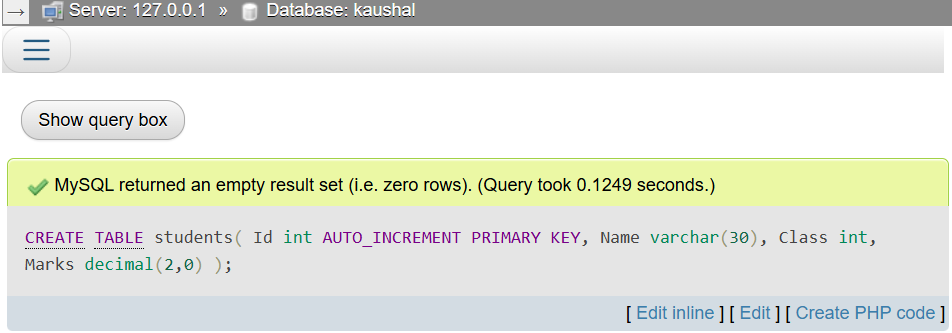
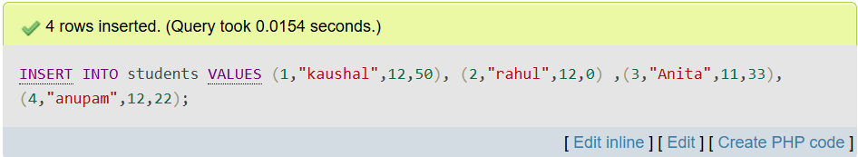
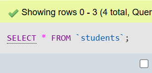
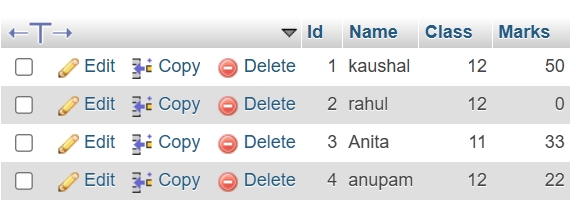
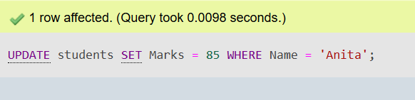
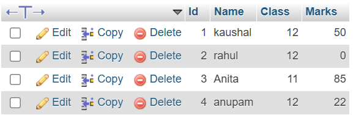
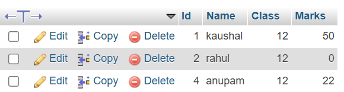

Update!!!
Past Year Questions of DBMS (2020-2024 and Model Questions) are in the end
Understanding Data, Information, and Databases
What is Data?
Data consists of raw, unprocessed facts, figures, or symbols collected from various sources. It represents values or observations that, in isolation, may lack meaning.
85, 90, 78 representing student scores before any
analysis.
What is Information?
Information is data that has been processed, organized, or structured to provide context and meaning. It transforms raw data into a useful and interpretable form that supports decision-making.
Key Features of Quality Information
- Accuracy: Must be precise and error-free to ensure reliability.
- Relevance: Pertinent to the context or the decision at hand.
- Timeliness: Delivered promptly and kept up-to-date.
- Completeness: Contains all necessary details without omission.
- Clarity: Presented in an understandable and well-organized manner.
What is a Database?
A database is a systematically organized collection of related data stored electronically, enabling efficient storage, retrieval, and management of information.
Purpose of a Database
The primary objective of a database is to organize data to facilitate efficient storage, quick retrieval, and reliable management. Databases support multiple users and applications while ensuring data security and integrity.
- Efficient storage and management of vast volumes of data.
- Fast, accurate, and reliable data retrieval.
- Facilitation of data sharing across various users and applications.
- Protection of data through security and access control mechanisms.
- Reduction of data duplication and inconsistency.
Common Database Terminologies
- Primary Key: A unique identifier for each record in a table.
- Foreign Key: A field in one table that references the primary key in another, establishing relational links.
- Candidate Key: Fields that qualify as potential primary keys.
Data Dictionary
A data dictionary is a centralized repository that stores metadata describing the database’s structure, including definitions of tables, fields, data types, and constraints. It facilitates understanding and managing the database schema.
Database Management System (DBMS)
Introduction
A DBMS is software that enables users to create, access, manage, and manipulate databases efficiently while enforcing data integrity, security, and consistency.
Objectives
- Efficient data storage and retrieval mechanisms.
- Ensuring accuracy and consistency of data across multiple transactions.
- Providing security through access control and authorization.
- Supporting concurrent access for multiple users without conflicts.
- Reducing data redundancy by centralizing data storage.
- Offering backup and recovery features to safeguard against data loss.
Advantages
- Improved data sharing and accessibility across users.
- Enhanced security and privacy controls.
- Improved data integrity and minimized duplication.
- Robust backup and recovery capabilities.
- Centralized data management simplifying administration.
Disadvantages
- High initial costs for system installation and licensing.
- Complex system design requiring specialized expertise.
- Need for trained personnel to maintain and operate.
- Potential risks of system failures causing data loss if backups are inadequate.
Types of Database Models
Integrity Constraints
- Primary Key: Uniquely identifies each record in a table.
- Foreign Key: A field in one table that refers to the primary key in another table.
- Candidate Key: A field that could serve as a primary key.
- Composite Key: A key consisting of more than one attribute.
Normalization
Introduction
Normalization is a systematic approach to organizing data in a database to reduce redundancy and improve data integrity. It involves dividing large tables into smaller, related ones and defining relationships using keys.
Normal Forms
- All columns contain atomic (indivisible) values.
- Each record is unique and identified by a primary key.
- The table is in 1NF.
- All non-key attributes are fully dependent on the entire primary key (i.e., no partial dependencies).
- The table is in 2NF.
- There are no transitive dependencies (i.e., non-key attributes do not depend on other non-key attributes).
Advantages of Normalization
- Reduction of Data Redundancy: Normalization helps eliminate duplicate data within the database by organizing tables such that each fact is stored only once. This reduces the amount of storage required and minimizes inconsistencies that arise when the same data is updated in multiple places.
- Improved Data Integrity: By enforcing relationships through keys and dependencies, normalization ensures that the data remains accurate and consistent. For example, updating a value in one place automatically reflects correctly across all related tables.
- Easier Database Maintenance: Since data is well-structured and logically organized, it becomes easier for database administrators and developers to maintain and update the database. Changes to the database schema or data itself are less error-prone and simpler to implement.
- Efficient Storage Utilization: Normalized databases minimize wasted space by avoiding unnecessary repetition of data. This leads to more efficient use of disk space and can improve overall system performance.
- Avoidance of Anomalies: Normalization helps prevent common data anomalies such as insertion anomalies (where you cannot insert data due to missing related data), update anomalies (where some data gets updated but other copies remain outdated), and deletion anomalies (where deleting data unintentionally removes important related data).
Disadvantages of Normalization
- Complex Queries: Highly normalized databases often require joining many tables to retrieve related data, which can make queries more complex and harder to write or understand. This can slow down the development process for complex reports or data retrieval.
- Performance Overhead: Because of the need for multiple joins between tables, normalized databases may suffer from slower performance in transaction-heavy applications or read-intensive operations, especially if the system is not optimized with indexes or caching.
- Possible Over-Normalization: Sometimes, excessive normalization leads to too many small tables, which fragments data excessively. This fragmentation can make the system harder to manage and impact performance negatively.
- Design Complexity: Designing a fully normalized database requires a good understanding of data dependencies and relationships, which can increase the time and effort required during the design phase. For newcomers, this can be a steep learning curve.
Centralized vs Distributed Databases
Introduction
A centralized database stores all data at a single, central location, usually on one server or mainframe computer. This makes management simpler, as all data is controlled from one place. In contrast, a distributed database spreads data across multiple physical locations, which could be in different buildings, cities, or countries. These distributed sites communicate and coordinate to give users the experience of working with a single database system.
Advantages
- Centralized Database: Because all data resides at one place, it is easier to maintain and secure. Backup procedures are straightforward, and administrators have full control over access and consistency, reducing the chance of conflicting data versions.
- Distributed Database: Distributed databases improve system availability and fault tolerance because data is replicated at multiple sites. If one site fails, others can continue operating. Users also benefit from faster local access to data stored near them, reducing latency.
Disadvantages
- Centralized Database: Having a single physical point of storage creates a risk—if the central server fails or is attacked, the entire system becomes unavailable. Performance may degrade for remote users who experience network delays accessing the central database.
- Distributed Database: Designing and managing a distributed database is complex. Ensuring data consistency across sites requires sophisticated synchronization and replication mechanisms, which may increase overhead. Security policies must be enforced across multiple locations, complicating administration.
Comparison Table
| Feature | Centralized Database | Distributed Database |
|---|---|---|
| Data Location | Stored at a single physical site | Stored at multiple physical sites |
| Fault Tolerance | Low; single point of failure | High; data replicated across sites |
| Performance | May be slow for distant users | Faster local access to data |
| Management | Simpler, centralized control | More complex; requires coordination |
| Cost | Lower initial setup cost | Higher due to multiple sites and networking |
Database Security
Introduction
Database security is the practice of protecting the database from unauthorized access, misuse, or damage to ensure that data remains confidential, accurate, and available only to authorized users. In today’s environment, where data breaches and cyberattacks are common, implementing strong database security measures is critical.
Challenges
- Unauthorized Access: Preventing hackers or internal users without permissions from reading or modifying sensitive data is a key challenge.
- Data Confidentiality and Privacy: Certain data, such as personal information, financial details, or trade secrets, must be protected to comply with legal regulations and maintain user trust.
- Protection Against Cyberattacks: Databases must be safeguarded against threats like SQL injection attacks, malware infections, and ransomware.
- Effective Access Control: Properly defining who can access what data, when, and under what conditions is complex in large organizations with many users and roles.
Security Measures
- Authentication: Verifying the identity of users before they can access the database through passwords, multi-factor authentication, or biometric verification.
- Authorization: Granting or restricting user permissions to access specific data or perform certain actions based on their roles.
- Encryption: Encoding data stored in the database or transmitted over the network to protect it from interception or theft.
- Audit Logging: Keeping detailed logs of all database activities helps detect unauthorized actions and supports forensic analysis if a breach occurs.
- Firewalls and Intrusion Detection: External protections prevent unauthorized network access to the database server.
Role of the Database Administrator (DBA)
The DBA plays a crucial role in ensuring database security by managing user accounts, defining access permissions, and enforcing security policies. They monitor database activity for suspicious behavior and perform regular backups to safeguard data. Additionally, DBAs apply security patches and software updates to fix vulnerabilities and comply with regulatory standards.
Practical Topics: DDL and DML Languages
Data Definition Language (DDL)
DDL commands are used to define and modify the structure of
database objects such as tables, indexes, and schemas. These
commands affect the schema or structure rather than the data
itself. For example, the CREATE command allows you to
create new tables or databases; ALTER lets you modify
existing table structures, such as adding or deleting columns; and
DROP deletes tables or other objects entirely.
Data Manipulation Language (DML)
DML commands are focused on managing the actual data stored within
database tables. These include SELECT to retrieve
data based on specific criteria, INSERT to add new
rows of data, UPDATE to modify existing data, and
DELETE to remove data. DML commands are essential for
day-to-day database operations and interact with the content
stored within the database.
SQL Data Types
CHAR
The CHAR data type is used to store fixed-length character strings. When you define a CHAR column, you specify its length, and the system always reserves that exact amount of space. If the stored string is shorter, the remaining space is padded with blanks. This makes CHAR efficient for storing data where the length is consistent, such as country codes or fixed-format identifiers.
VARCHAR
VARCHAR stores variable-length character strings, which means it only uses as much space as the actual string requires, plus a small amount of overhead. This is more space-efficient than CHAR when storing strings of varying lengths, such as names or addresses. The maximum length must be defined when creating the column.
BINARY
BINARY is similar to CHAR but stores fixed-length binary data instead of characters. This is useful for storing data like images or encrypted information where exact binary representation must be preserved.
VARBINARY
VARBINARY stores variable-length binary data. It works like VARCHAR but for binary files or data streams. This allows for efficient storage when the size of the binary data varies.
TINYBLOB
TINYBLOB is a Binary Large Object designed to store very small amounts of binary data, such as thumbnails or small icons. It supports up to 255 bytes.
TINYTEXT
TINYTEXT stores small amounts of text data, up to 255 characters. It’s useful for brief text fields like short comments or tags.
TEXT
TEXT is intended for larger amounts of textual data, such as descriptions, articles, or notes. It can store up to 65,535 characters and is useful when you expect more extended content than VARCHAR can efficiently handle.
LONGTEXT
LONGTEXT stores very large amounts of text, up to 4 gigabytes in size. It is suitable for extensive documents, such as logs, HTML content, or long-form articles.
ENUM
ENUM defines a string column that can only take one value from a predefined list of allowed values. This ensures data integrity by restricting input to specific options, such as 'Male' or 'Female', or status values like 'Pending', 'Approved', or 'Rejected'.
BIT
BIT stores bit-field values and is commonly used to represent boolean flags or binary indicators where each bit has a specific meaning.
TINYINT
TINYINT is a very small integer type that typically occupies 1 byte and can represent values from -128 to 127 in signed mode or 0 to 255 if unsigned. It’s ideal for small numeric ranges, such as age or small counters.
BOOLEAN
BOOLEAN is used to represent logical TRUE or FALSE values. In many databases, it is implemented as a TINYINT with values 1 (true) or 0 (false).
INTEGER (INT)
INTEGER or INT is a common numeric type used to store whole numbers. It typically uses 4 bytes and can represent large ranges of positive and negative numbers, suitable for general counting or identification purposes.
FLOAT and DOUBLE
FLOAT and DOUBLE are approximate numeric types that store decimal numbers using floating-point representation. FLOAT uses less storage but less precision, while DOUBLE uses more storage and provides higher precision. They are useful when exact decimal precision is not critical, such as scientific calculations.
DECIMAL
DECIMAL (or NUMERIC) is a fixed-point numeric type that stores exact decimal numbers with a defined precision and scale. It is often used for financial data where precise decimal representation is required to avoid rounding errors.
DATE
The DATE data type stores calendar dates (year, month, and day) without time. It is useful for birthdays, appointment dates, or any date-only information.
DATETIME
DATETIME stores both date and time values together, including hours, minutes, and seconds. This is useful for timestamps, event logs, or any data requiring full temporal detail.
Past year questions
What is Database and DBMS? List out the advantages and disadvantages of DBMS.
What is a Database?
A Database is an organized collection of data that can be easily accessed, managed, and updated. It stores data in a structured format, usually in tables, for efficient retrieval and manipulation.
What is DBMS?
A Database Management System (DBMS) is software that interacts with users and applications to manage and control access to data stored in a database. It ensures data integrity, security, and consistency while providing tools to store, retrieve, and modify data easily.
Advantages of DBMS:
- Reduces data redundancy and inconsistency
- Allows data sharing among multiple users
- Enhances data security
- Supports data integrity and accuracy
- Provides backup and recovery features
- Improves data accessibility and usability
Disadvantages of DBMS:
- High initial cost of hardware and software
- Complexity in implementation and maintenance
- Requires skilled technical staff
- May have slower performance for small datasets
Differentiate between File Processing System and DBMS. Give at least four points.
Difference between File Processing System and DBMS:
| File Processing System | DBMS |
|---|---|
| Stores data in separate files for each application | Stores data in a centralized database |
| High data redundancy and inconsistency | Minimizes data redundancy and maintains consistency |
| Security is handled individually in each program | Provides centralized security and access control |
| Backup and recovery are manual and complex | Automatic backup and recovery mechanisms |
Explain the different models of DBMS with advantages and disadvantages.
1. Hierarchical Model
Data is organized in a tree-like structure, where each record has a single parent and possibly many children.
Advantages:- Simple to design and understand
- Efficient for operations on hierarchical data
- Rigid structure; difficult to reorganize
- Not suitable for complex relationships
2. Network Model
This model allows each record to have multiple parent and child records using a graph structure.Similar to the hierarchical model but allows many-to-many relationships through the use of sets and pointers.
Advantages:- More flexible than hierarchical model
- Efficient for complex relationships
- Complex to design and maintain
- Difficult to implement and navigate
3. Relational Model
Data is organized into tables (relations) with rows and columns. This is the most widely used model.Data is stored in tables (called relations) consisting of rows and columns. It is the most widely used model today.
Advantages:- Simple and easy to use
- Supports powerful query languages like SQL
- High data integrity and flexibility
- Performance may be slower for complex queries
- More storage and processing power required
What is a relational database? How is it different from other database models? Explain.
What is a Relational Database?
A Relational Database is a type of database that stores data in the form of tables (also called relations). Each table consists of rows and columns, where rows represent records and columns represent attributes. It uses keys (like primary and foreign keys) to maintain relationships between tables.
The relational model was introduced by E. F. Codd and is widely used in modern DBMS systems such as MySQL, PostgreSQL, Oracle, and SQL Server.
Differences Between Relational and Other Database Models:
| Relational Database | Other Database Models |
|---|---|
| Stores data in tables with rows and columns | Stores data as trees (hierarchical), graphs (network) |
| Uses SQL for querying and managing data | May require complex navigation methods or custom queries |
| Highly flexible and scalable for various applications | Limited to specific types of data relationships |
| Supports normalization and data integrity through constraints | Maintaining data integrity can be harder in some models |
What is data redundancy? How does DBMS help in reducing it? Explain.
What is Data Redundancy?
Data redundancy refers to the unnecessary repetition or duplication of data in a database or data storage system. It occurs when the same piece of data is stored in multiple places, which can lead to inconsistencies, wasted storage space, and difficulties in data management.
How Does DBMS Help Reduce Data Redundancy?
A Database Management System (DBMS) helps in reducing data redundancy by:
- Centralizing data storage, so data is stored only once and accessed by multiple applications.
- Using relational models that support normalization — a process that removes duplicate data by organizing it into related tables.
- Allowing relationships between tables using keys (e.g., foreign keys) instead of repeating data.
- Maintaining data consistency through constraints and rules.
As a result, DBMS ensures efficient storage, minimizes duplication, and maintains data accuracy across the system.
Differentiate between Centralized and Distributed Database Systems.
Difference between centralized and distributed dbms are
| Centralized Database System | Distributed Database System |
|---|---|
| Stores all data in a single central location or server. | Stores data across multiple physical locations or servers connected via a network. |
| Data management is simpler because all data is centralized. | Data management is complex due to data distribution and network communication. |
| Generally easier to maintain and control. | Requires sophisticated software to manage distributed data and ensure consistency. |
| if the central server fails, the entire system is affected. | failure of one site doesn’t necessarily disrupt the whole system. |
| May have slower access for remote users. | Provides faster access by allowing local data storage near users. |
Who is a Database Administrator (DBA)? Exploring the Key Roles and Responsibilities
Who is a Database Administrator (DBA)?
A Database Administrator (DBA) is a specialized IT professional who serves as the primary custodian of an organization's data assets. These experts design, implement, and maintain database systems that serve as the foundation for business operations, applications, and data analytics. DBAs ensure that databases remain available, secure, and optimized to support organizational needs while adhering to industry best practices and compliance requirements.
Major Responsibilities of a DBA:
- 1.Database System Management: Installing, configuring, and regularly updating database management systems and related tools to maintain system health and security.
- 2.Access Control and Security: Establishing user accounts, defining permission levels, and implementing robust security measures to protect sensitive data from unauthorized access.
- 3.Performance Optimization: Continuously monitoring system performance, identifying inefficiencies, and implementing tuning strategies to ensure fast query responses and smooth operations.
- 4.Data Protection: Developing and enforcing comprehensive security protocols, including encryption standards and compliance with data protection regulations.
- 5.Backup and Recovery Systems: Designing reliable backup procedures and disaster recovery plans to safeguard against data loss and minimize downtime during system failures.
- 6.Database Architecture: Collaborating with development teams to create efficient database structures that support application requirements while ensuring scalability.
- 7.Technical Support: Troubleshooting database-related issues, resolving system errors, and providing technical guidance to other teams.
- 8.Data Quality Assurance: Implementing validation checks and consistency controls to maintain accurate, reliable data across all systems.
- 9.Infrastructure Planning: Analyzing current and future data storage needs to ensure the database environment can scale with organizational growth.
- 10.Process Documentation: Maintaining detailed records of database configurations, maintenance procedures, and operational protocols for reference and auditing purposes.
In modern organizations, database administrators serve as critical bridges between technical teams and business units, ensuring that database systems align with operational requirements while maintaining high standards of security and reliability. Their expertise supports everything from daily transactions to strategic business intelligence initiatives.
Define normalization. Explain 1NF, 2NF and 3NF with suitable examples. Explain the normalization process with examples.
Definition of Normalization
Normalization is the process of organizing data in a database to reduce redundancy and improve data integrity. It involves dividing a database into two or more tables and defining relationships between them according to rules called normal forms.
Normal Forms
First Normal Form (1NF)
A table is in 1NF if:
- All columns contain atomic (indivisible) values
- There are no repeating groups or arrays
Example: Consider the following table storing student information with subjects:
| StudentID | Name | Subjects |
|---|---|---|
| S007 | Ichigo | AI, Robotics |
| S008 | Luffy | Cybersecurity |
This table is not in 1NF because the Subjects column has multiple values.
After applying 1NF:
| StudentID | Name | Subject |
|---|---|---|
| S007 | Ichigo | AI |
| S007 | Ichigo | Robotics |
| S008 | Luffy | Cybersecurity |
Second Normal Form (2NF)
A table is in 2NF if:
- It is already in 1NF
- All non-key attributes are fully functionally dependent on the primary key
- There is no partial dependency
Example: Consider a table storing course registrations:
| StudentID | CourseID | StudentName | CourseName |
|---|---|---|---|
| S007 | C101 | Ichigo | Matrix Algebra |
| S008 | C202 | Luffy | Cyber Defense |
This has partial dependencies (StudentName depends only on StudentID, CourseName depends only on CourseID).
After applying 2NF:
| StudentID | StudentName |
|---|---|
| S007 | Ichigo |
| S008 | Luffy |
| CourseID | CourseName |
|---|---|
| C101 | Matrix Algebra |
| C202 | Cyber Defense |
| StudentID | CourseID |
|---|---|
| S007 | C101 |
| S008 | C202 |
Third Normal Form (3NF)
A table is in 3NF if:
- It is already in 2NF
- There is no transitive dependency
Example: Consider a table storing student details:
| StudentID | StudentName | Department | DepartmentHead |
|---|---|---|---|
| S007 | Ichigo | Computer Science | Dr. Kaushal |
| S008 | Luffy | Information Security | Dr. Siddhu |
DepartmentHead depends on Department (transitive dependency).
After applying 3NF:
| StudentID | StudentName | Department |
|---|---|---|
| S007 | Ichigo | Computer Science |
| S008 | Luffy | Information Security |
| Department | DepartmentHead |
|---|---|
| Computer Science | Dr. Kaushal |
| Information Security | Dr. Siddhu |
| Mathematics | Dr. Poe |
| Physics | Dr. Kungfu |
Normalization Process Summary
- 1NF: Eliminate repeating groups and ensure atomic values
- 2NF: Remove partial dependencies by splitting tables
- 3NF: Eliminate transitive dependencies by separating dependent attributes
Each normalization step reduces data redundancy while improving data integrity and query efficiency.
Explain the terms: primary key, foreign key, and candidate key with examples.
Primary Key
A primary key is a fundamental concept in database design that serves as the unique identifier for each record in a table. It must satisfy these properties:
- Uniqueness: No two rows can have the same primary key value
- Non-nullability: The primary key cannot contain NULL values
- Stability: The value should ideally remain constant over time
Example: In a university database, the Students table might use student_id as the primary key:
| student_id | full_name | date_of_birth |
|---|---|---|
| STU2023001 | Alex Johnson | 2000-05-15 |
| STU2023002 | Maria Garcia | 1999-11-22 |
Foreign Key
A foreign key establishes a relationship between two tables by referencing the primary key of another table. It enforces referential integrity, ensuring that:
- You cannot create a record with a foreign key that doesn't exist in the referenced table
- You cannot delete a record that is referenced by a foreign key (unless using cascade operations)
Example: In the same university database, the Course_Registrations table would use student_id as a foreign key:
| registration_id | student_id | course_code | semester |
|---|---|---|---|
| REG1001 | STU2023001 | CS101 | Fall 2023 |
| REG1002 | STU2023002 | MATH202 | Fall 2023 |
Candidate Key
A candidate key is any column or combination of columns that could serve as a primary key. All candidate keys must satisfy:
- Uniqueness (no duplicate values)
- Irreducibility (no subset of the columns can uniquely identify rows)
Example: In an Employees table, multiple attributes might qualify as candidate keys:
| employee_id | national_id | company_email | full_name |
|---|---|---|---|
| EMP001 | NID12345678 | alex.j@company.com | Alex Johnson |
| EMP002 | NID87654321 | maria.g@company.com | Maria Garcia |
Here, employee_id, national_id, and company_email are all candidate keys.
Key Comparison
| Key Type | Purpose | Characteristics | Example |
|---|---|---|---|
| Primary Key | Main unique identifier | Unique, not null, immutable | student_id in Students |
| Foreign Key | Establish relationships | References primary key, can be null | student_id in Registrations |
| Candidate Key | Potential unique identifiers | Unique, irreducible, one becomes primary | email, national_id in Employees |
Practical Considerations
- Primary keys are often auto-incrementing integers or UUIDs for simplicity
- Foreign keys create parent-child relationships between tables
- Choosing the right primary key from candidate keys affects database performance
- Composite keys (multiple columns) can be used when single columns aren't unique
What is SQL? Explain its components and common functions.
What is SQL?
SQL (Structured Query Language) is a standard programming language specifically designed for managing and manipulating relational databases. It enables users to:
- Create, modify, and delete database structures
- Insert, update, and retrieve data
- Control access to data
- Ensure data integrity and security
SQL is declarative - users specify what data they want rather than how to retrieve it.
Major Components of SQL
1. Data Definition Language (DDL)
Commands that define the database structure:
| Command | Description | Example |
|---|---|---|
| CREATE | Creates database objects | CREATE TABLE Employees (id INT, name VARCHAR(100)); |
| ALTER | Modifies database objects | ALTER TABLE Employees ADD COLUMN email VARCHAR(255); |
| DROP | Deletes database objects | DROP TABLE Employees; |
| TRUNCATE | Removes all records from a table | TRUNCATE TABLE Employees; |
2. Data Manipulation Language (DML)
Commands for managing data within tables:
| Command | Description | Example |
|---|---|---|
| SELECT | Retrieves data from database | SELECT * FROM Employees WHERE department = 'IT'; |
| INSERT | Adds new records | INSERT INTO Employees VALUES (1, 'John Doe'); |
| UPDATE | Modifies existing records | UPDATE Employees SET salary = 75000 WHERE id = 101; |
| DELETE | Removes records | DELETE FROM Employees WHERE id = 102; |
Common SQL Functions
1. Aggregate Functions
| Function | Description | Example |
|---|---|---|
| COUNT() | Counts rows | SELECT COUNT(*) FROM Employees; |
| SUM() | Calculates sum | SELECT SUM(salary) FROM Employees; |
| AVG() | Calculates average | SELECT AVG(salary) FROM Employees; |
| MAX() | Finds maximum value | SELECT MAX(salary) FROM Employees; |
| MIN() | Finds minimum value | SELECT MIN(salary) FROM Employees; |
2. String Functions
| Function | Description | Example |
|---|---|---|
| CONCAT() | Combines strings | SELECT CONCAT(first_name, ' ', last_name) FROM Employees; |
| SUBSTRING() | Extracts part of string | SELECT SUBSTRING(name, 1, 3) FROM Employees; |
| UPPER() | Converts to uppercase | SELECT UPPER(name) FROM Employees; |
| LOWER() | Converts to lowercase | SELECT LOWER(name) FROM Employees; |
| LENGTH() | Returns string length | SELECT LENGTH(name) FROM Employees; |
Write SQL queries for the following tasks:
Create a table named students with the fields: Id, Name, Class, and Marks.
CREATE TABLE students (Id int AUTO_INCREMENT PRIMARY KEY, Name varchar(30), Class int, Marks DECIMAL(2,0));

Insert records into the students table with appropriate values.
INSERT INTO students VALUES (1,'Kaushal', 12, 50), (2,'Rahul', 12, 0),(3,'Anita',12,33),(4,'anupam',12,22);

Display all records from the students table.
SELECT * FROM students;


Update the marks of a student whose name is 'Anita' to 85.
UPDATE students SET Marks = 85 WHERE Name = 'Anita';


Delete the record of the student with id = 3.
DELETE FROM students WHERE Id = 3;

Define the following terms:
- Data Dictionary
- Primary Key
- Relationship
- Data Manipulation Language (DML)
- Structured Query Language (SQL)
- Data Integrity
- Data Definition Language (DDL)
- Data Security
- Database System
- Data Dictionary: A centralized repository that contains metadata about the database, such as definitions of data elements, data types, and relationships.
- Primary Key: A column or set of columns that uniquely identifies each record in a table and cannot contain NULL values.
- Relationship: An association between two or more tables in a database that defines how data in one table relates to data in another.
- Data Manipulation Language (DML): A language used for retrieving, inserting, updating, and deleting data in a database (e.g., SQL commands like SELECT, INSERT, UPDATE, DELETE).
- Structured Query Language (SQL): A standard language used to manage and manipulate relational databases.
- Data Integrity: The accuracy, consistency, and reliability of data stored in a database over its lifecycle.
- Data Definition Language (DDL):A language used to define and modify database structures, such as creating or altering tables (e.g., SQL commands like CREATE, ALTER, DROP).
- Data Security: Measures and controls that protect the database from unauthorized access, misuse, or theft.
- Database System: A combination of hardware, software, and data organized to efficiently store, retrieve, and manage data.